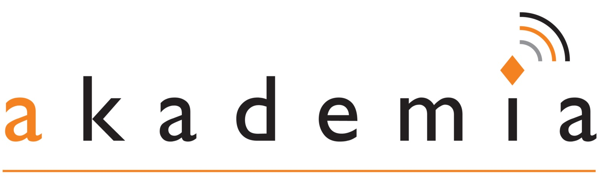

<ion-view view-title="{{ 'mm.login.connecttomoodle' | translate }}">
    <!-- This page will be used to automatically go to spens.akademia.ac.za
        This will be done without removing any pages from the flow of the app
        the inputs giving the option to choose a site will be removed and replaced with spens.akademia.ac.za
     -->
  <ion-nav-buttons side="secondary">
      <button class="button button-icon ion-ios-help-outline" ng-click="showHelp()" aria-label="{{ 'mm.core.help' | translate }}"></button>
  </ion-nav-buttons>
  <ion-content>
      <div class="list card">

          <div class="item item-avatar">
              
              <h2>{{'mm.login.welcome' | translate}}</h2>
              <p>{{'mm.login.welcome2' | translate}}</p>
          </div>

          <div class="item item-image">
              
          </div>

          <a class="item item-icon-left assertive" href="#">
              <button class="button button-block" ng-click="connect('spens.akademia.ac.za')">{{ 'mm.login.connect' | translate }}</button>

          </a>

      </div>

      <div class="list">
        <!-- <div class="item item-text-wrap">{{ 'mm.login.newsitedescription' | translate }}</div> -->
        <form>
            <!--
          <label class="item item-input item-stacked-label">
            <span class="input-label">{{ 'mm.login.siteaddress' | translate }}</span>
            <input type="url" placeholder="moodle.org" ng-model="siteurl" mm-no-input-validation ng-change="validate(siteurl)" mm-auto-focus >
          </label>
          -->
          <div class="item">
              <!-- <button class="button button-block" ng-click="connect(siteurl)" ng-disabled="isInvalidUrl">{{ 'mm.login.connect' | translate }}</button> -->
              <!-- <input type="submit" class="button button-block" value="{{ 'mm.login.connect' | translate }}" > -->
          </div>
        </form>
      </div>
    </form>
  </ion-content>
</ion-view>